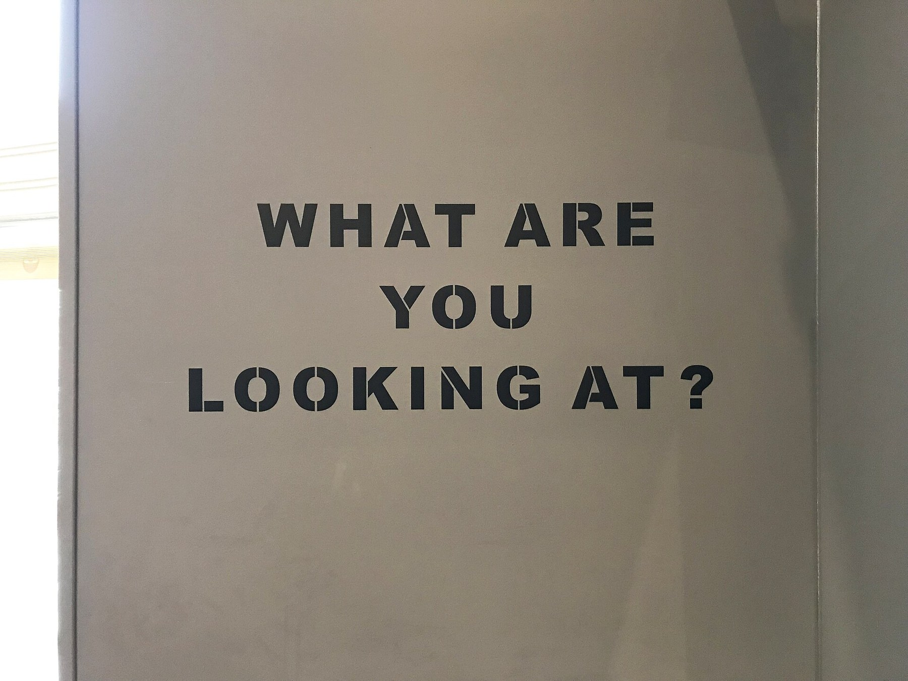
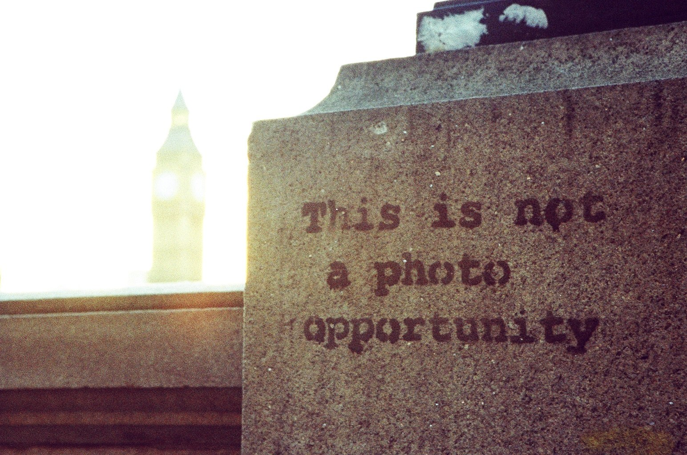

Dys version · Lesson 6 of 6
Lesson 6. Exhibiting Banksy without owning the name
Activités langagières. Médiation, production écrite (Situation A practice), production orale en continu and interaction (Situation B practice). This is classroom assessment, not the CCF itself.
The question today. How can you present a visual slogan to a visitor without saying more than you know?
A slogan in an exhibition, and a slogan about looking
The first photograph is a museum wall: What are you looking at? It is an exhibition display, not the original street work of Lesson 1. The second says: This is not a photo opportunity, near Big Ben. Before you write a label, say what each image says, to whom, and in what tone.


Your job
You are a mediator for an exhibition called Banksy: Public Walls, Private Names. You will:
- Present one work as a visual slogan (what it says, to whom, in what tone), then what you can see, where it is, and why the place matters.
- Keep identity as a claim, if you mention it: According to Reuters... You never say: Banksy's real name is...
- Recommend what should happen to a fictional mural on a warehouse.
- Answer a visitor's question.
- Write a short label.
You are not asked to find a private address or to investigate a private person.
Worked example of a label
This photograph shows a gymnast with a ribbon, on a damaged building in Irpin, in 2022. The work is widely attributed to Banksy. The hole in the wall is part of the image. In 2023 the section of wall was moved, in order to save it. The artist's civil identity is not confirmed in the sources used for this exhibition.
Exercise. Repair this bad label: "This mural was painted by Robin Gunningham in 2022."
Corrigé
Example: A mural widely attributed to Banksy, 2022. Reuters reported a civil name in March 2026. Banksy did not confirm it in the sources used here. (You may also leave the civil name out of the label completely.)
Written work
Write a label of four to six short sentences for your work. Then write three sentences: I think the warehouse mural should / should not be removed, because... If it is removed, it may...
Oral work
Speak for 40 to 50 seconds about your work, then answer one visitor question:
- "Who is Banksy, really?"
- "Can we just cut this wall and show it here?"
Frame for the first question: We do not know a confirmed civil name. According to Reuters... Banksy did not confirm this. I think the work can already speak, because...
After the assessment
Look at the grid with your teacher. Write: 1. What you missed. 2. A better version of one sentence. This improved sentence is part of your work.
The principle to keep
A mural can have an author without a confirmed civil identity. A press report can be serious and still remain a claim. Owning a wall is not the same as owning the image, and it is not the same as public access. As a mediator, I should be accurate. I should not overstate.